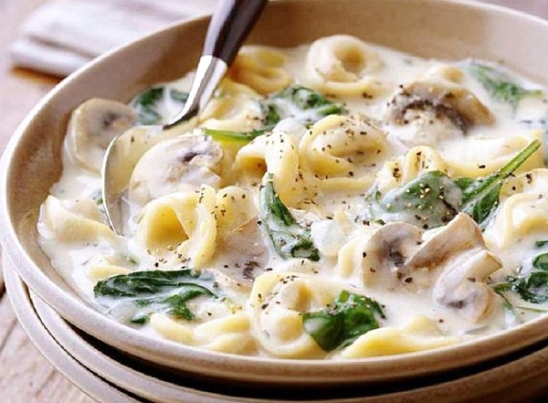

Tortellini
Ingredients
- A tablespoon of olive oil.
- A clove of garlic.
- 225 g of Italian sausage.
- A piece of onion. spoon of black pepper.
- Half a pound of carrots.
- 425 grams of cooked tomatoes.
- Half a teaspoon of dried basil.
- 3 cups of water.
- Half a teaspoon of dried oregano.
- 112 grams of spinach.
- 3 cups of vegetable broth.
- 225 grams of tortellini pasta stuffed with cheese.
Recipe
- Put each of the sausages with olive oil in a large saucepan and stir over a medium heat until fully cooked. Cut the ingredients into small pieces while stirring.
- Cut the onions into cubes, then mash the garlic, add to the pot and stir the ingredients until the onions are soft, cut the carrots into slices, add to the pot and stir for minutes.
- Add basil, cooked tomatoes, oregano, and black pepper. While continuing to stir, chop tomatoes with a spoon.
- Pour the vegetable broth with water, cover the pot and leave the ingredients on a high heat to boil the broth, then add the tortellini and continue to stir the ingredients for up to 8 minutes.
- Turn off the heat, then add the spinach and continue stirring until the ingredients wilt and the soup is ready to be served. /li>
- Pour the soup into a serving dish, then serve.